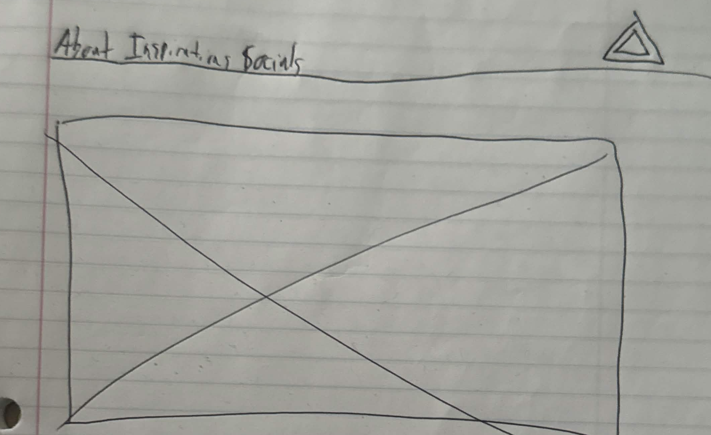

- Main image is a slideshow of various work that I've done.
- Big text overlayed over it with something like "Hey, all!" over the slideshow.
- Enough space below to indicate that there's more to the website.
For a navigation menu, I knew I wanted a few things to be consistent. It has to be notable and it has to be purple as per my own branding. I experimented on previous pages that already had a navigation list built in already, and just tested different tags on them. I did link the Inspiration Page to the style file for the main home menu page, just to see if that’s something I can do. From my experience the two pages felt more natural traveling between Home and Inspiration compared to other pages. Easing into a completely new layout obviously felt better compared to a page with completely different elements.